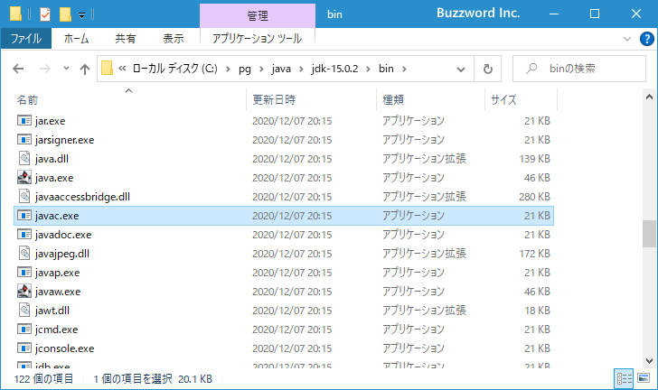
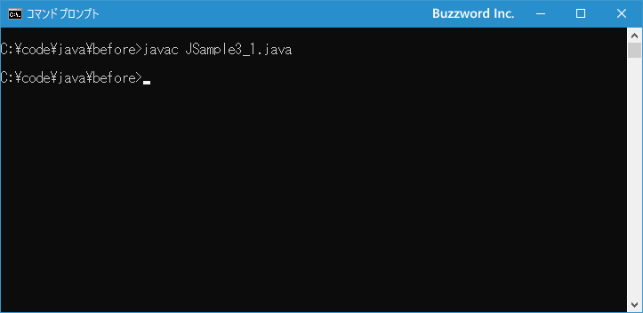
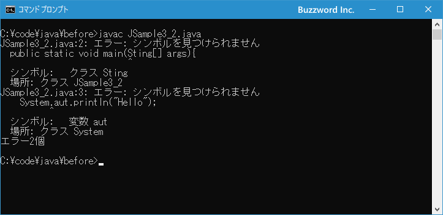

- Home ›
- Java入門 ›
- Javaプログラムの事前準備
プログラムをコンパイルしてクラスファイルを作成する
Java を使って記述したプログラムを実行するには、まずコンパイルという処理を行ってプログラムが記述されたソースファイルからプログラムを実行できるクラスファイルを作成する必要があります。ここではコンパイルを行ってクラスファイルを作成する方法について解説します。
コンパイルとは
プログラミングの言語を使って作成したプログラムのソースファイルは、人が読むことが出来るテキスト形式で記述されていますが、プログラムを実行する時にはコンピュータが理解できるバイナリコードで記述された形式に変換されてから実行されます。ただどのタイミングで変換がされて、どのように実行されるのかはプログラミング言語によっていろいろです。
プログラミングの言語の中でも Python 、 Perl 、 PHP 、 Ruby などはインタープリタ型言語と呼ばれます。プログラムを実行するためのプログラムが別に用意されており、プログラムを実行する時にソースプログラムを読み込んで実行時に変換してからプログラムが実行されます。例えば Python であれば次のようにプログラムを実行します。
python ソースファイル名.py
python というのがプログラムを実行するプログラムで、引数に指定しソースファイルを実行時にバイナリコードに変換してから実行します。事前にバイナリコードに変換する手間がかからない反面、実際に実行してみないと作成したプログラムに誤りがあるかどうか分かりません。
プログラミングの言語の中でも C言語 はコンパイラ型言語と呼ばれます。作成したプログラムは事前にコンパイルという作業を行い、バイナリコードに変換します。 C言語 で作成されたバイナリコードは拡張子が .exe などの実行形式となっており、このファイル単独でプログラムを実行することができます。例えば C言語 で作成されたプログラムは次のようにプログラムを実行します。
プログラムファイル名.exe
コンパイルを行った時にプログラムに誤りがないかどうかチェックされているので、(プログラムには誤りがないが実行時にエラーとなることはあります)プルグラムは問題なく実行することができます。
では Java で作成したプログラムはどうかといういと、 C言語 などと同じように Java で作成したプログラムも事前にコンパイルを行います。その為、作成したプログラムに誤りがないかどうかはコンパイル時にチェックされて、コンパイルによってバイナリコードのファイルが作成されます。このファイルを Java ではクラスファイルと呼んでいます。
ただ C言語 のようにコンパイルによって実行形式のファイルを作成されるわけえはないので、 Java のプログラムを実行するにはプログラムを実行するためのプログラムが別に用意されており、コンパイルによって作成されたクラスファイルを読み込んでプログラムが実行されます。
java クラスファイル名
このように Java はコンパイラ型とインタプリタ型を併用した形式となっています。それぞれの形式でメリットデメリットなどがありますが、ここではこれ以上の解説は行いませんのでご興味のある方は別途調べてみてください。
Javaのプログラムをコンパイルする
ここまでに解説したように Java を使って作成したプログラムを実行するには、最初にコンパイルを行ってソースファイルからクラスファイルと呼ばれるバイナリコードのファイルを作成する必要があります。コンパイルを行うには javac というプログラムを使って次のように行います。
javac ソースファイル名.java
コンパイルを行う時に使用する javac.exe というプログラムは、 JDK をインストールしたディレクトリの中の bin ディレクトリの中に入っています。

それでは実際にコンパイルを行ってみます。テキストエディタを起動し、次のような簡単なプログラムを入力しました。
class JSample3_1{
public static void main(String[] args){
System.out.println("Hello");
}
}
作成が終わりましたら、ソースファイルを JSample3_1.java というファイル名で任意のディレクトリに保存します。
プログラムをコンパイルする場合、 Windows 環境であればコマンドプロンプトから行います。コマンドプロンプトを起動してください。(コマンドプロンプトを起動する方法については「コマンドプロンプトを起動する」を参照されてください)。起動が終わりましたら、先ほどソースファイルを保存したディレクトリへ移動してください。

今回プログラムが記述されたソースファイル名が JSample3_1.java なので、コンパイルは次のように入力してから Enter キーを押して下さい。
javac JSample3_1.java

エラーが発生せず、上記のように表示されればプログラムのコンパイルは完了です。それではクラスファイルが作成されているか確認を行います。ソースファイルを保存したディレクトリを確認してください。
新しく JSample3_1.class というファイルが作成されています。このようにコンパイルを行ったことにより、ソースファイルから拡張子が .class のクラスファイルが作成されました。これでプログラムを実行するための準備は完了です。
コンパイルエラーが発生した場合
コンパイルによってソースファイルからクラスファイルを作成する時に、記述されたプログラムが文法的に間違っていないかどうかのチェックが行われます。プログラムの中で間違いがあった場合にはコンパイルを行った時にエラーが表示され、エラーがあった場合にはクラスファイルは作成されません。
それではわざと文法的に間違えたプログラムを記述してコンパイルを行ってみます。テキストエディタを起動し、次のような簡単なプログラムを入力しました。
class JSample3_2{
public static void main(Sting[] args){
System.aut.println("Hello");
}
}
正しくは String[] と書くべきところを Sting[] と記述し、また正しくは out と書くべきところを aut と記述しました。このソースファイルを JSample3_2.java というファイル名で保存します。
それではコンパイルを行います。コマンドプロンプトから次のように実行してください。
javac JSample3_2.java
次のようにエラーが表示されました。

プログラムに問題のある個所が見つかったため、プログラムのどの行のどの部分がどんな理由でおかしいのかというエラーが表示されました。エラーが発生した場合はクラスファイルの作成は行われません。プログラムの問題のある個所を修正し、保存してから改めてコンパイルを行ってください。
-- --
Java を使って作成したプログラムをコンパイルを行ってクラスファイルを作成する方法について解説しました。
( Written by Tatsuo Ikura )

著者 / TATSUO IKURA
初心者～中級者の方を対象としたプログラミング方法や開発環境の構築の解説を行うサイトの運営を行っています。